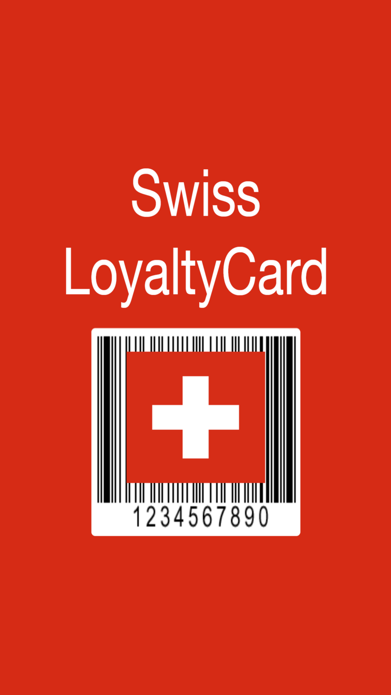
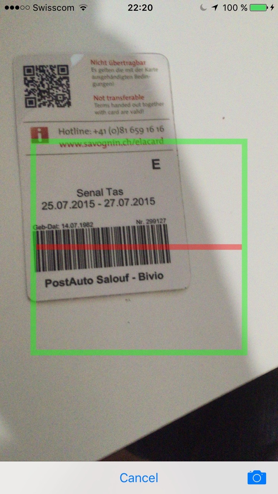
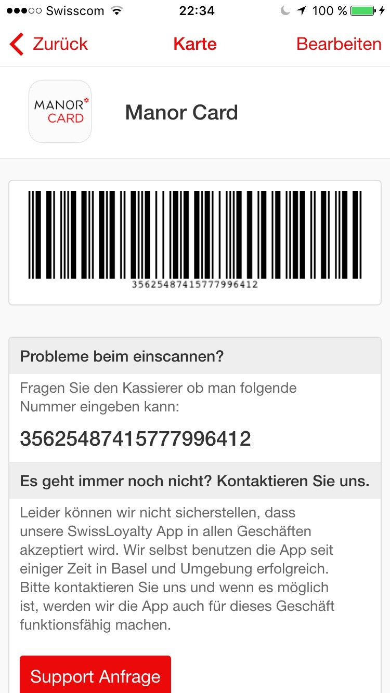

Not every store in Switzerland is supporting Passbook or similar electronic loyalty cards.
Just scan your loyalty card and show it to the cashier or use it at the self-checkout (e.g. Subito or Passabene).
All loyalty cards you need in Switzerland at one place.
No need to enter any kind of PIN or to register in order to use this app.
We do not intend to send you any kind of ads or commercials.
You can scan several Barcodes and save them locally on your device. You can either choose from a list of predefined stores or use "others" to enter a generic store if it's not listed.
We are using this app successfully for ourself in the Basel area for quite some time now and got never rejected, therefore we thought it might be a good idea to share this App with other folks in Switzerland. Of course this app is working outside of Switzerland with almost any kind of barcode.

Support Request


 